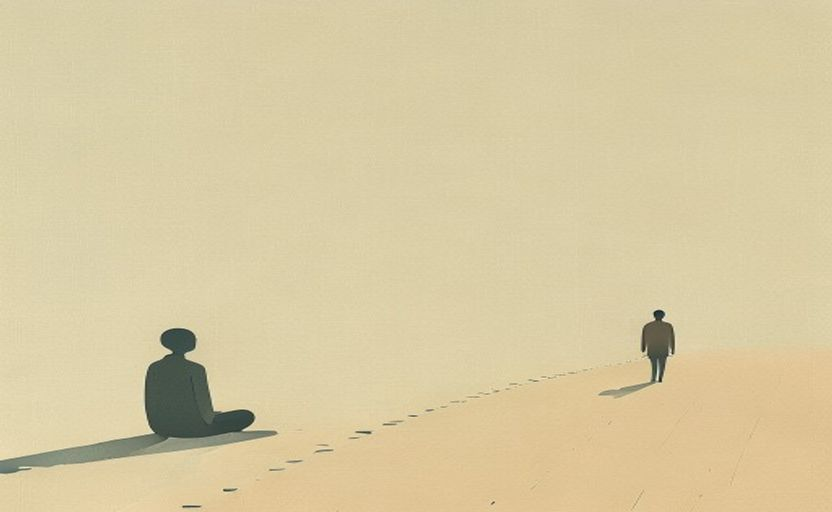
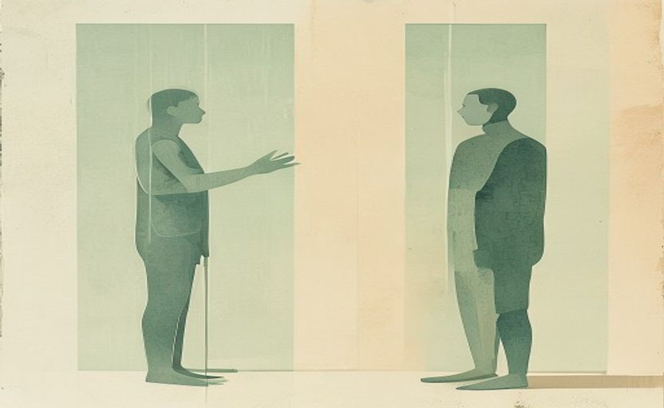
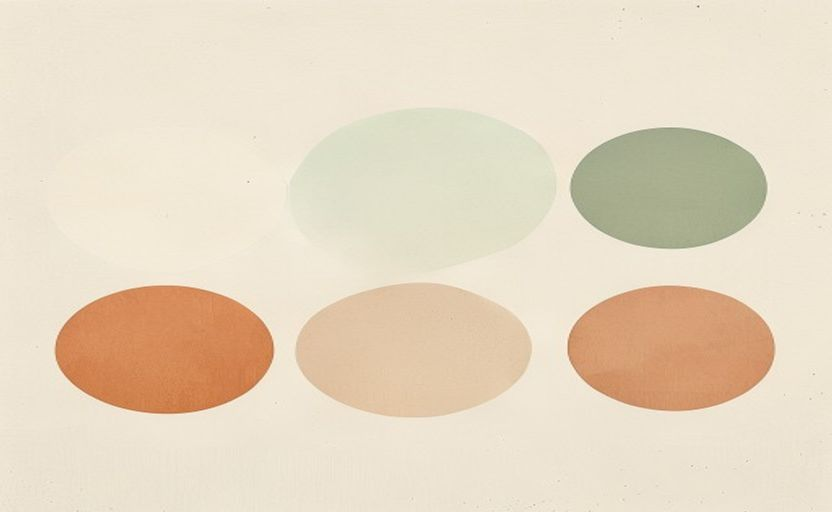
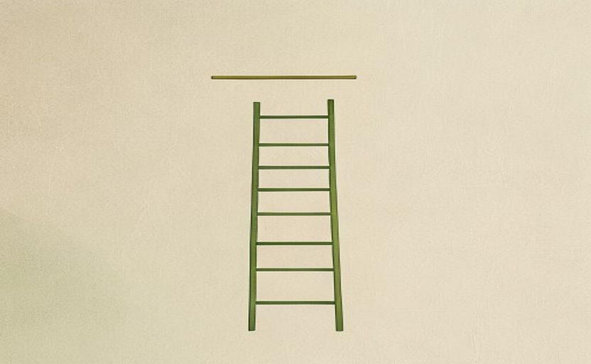
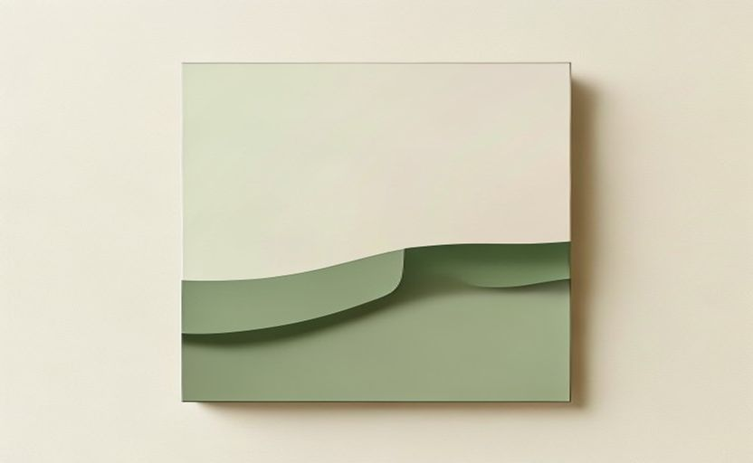
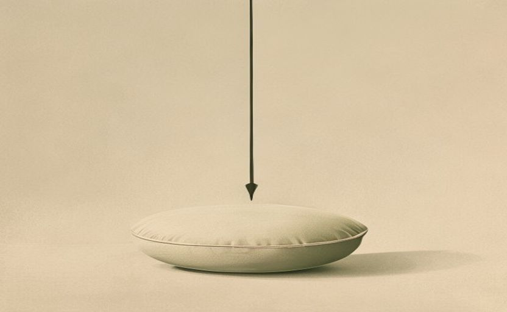
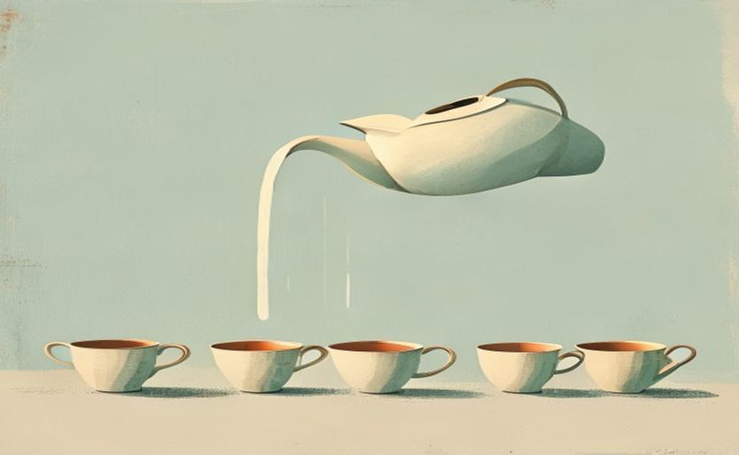

SCREEN 01 ── ホーム(開演前)
SCHEMA THERAPY WORKSHOP
十八の早期不適応スキーマ ── 内省のための机上ワーク
自分に響くカードを選び、机に並べ、距離を変えながら眺める。
SCREEN 02 ── カードを選ぶ(暗がりに発光する紙)
SELECT YOUR CARDS

見捨てられ不安定
不信／虐待
欠陥／恥
厳密な基準過度の批判
感情抑制
罰SCREEN 03 ── 机(ワーク) ── スポットライトの卓・ライブ提出の灯り

自己犠牲